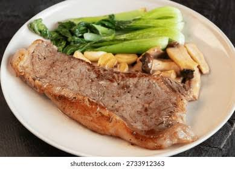

YOKO'S KITCHEN
JAPANESE COOKING CLASSES

Bok Choi

Teriyaki Sauce
Japanese Vegetarian
Five week course in London
A five week introduction to traditional
Japanese vegetarian meals, teaching you a
selection of rice and noodle dishes.
Sauces Masterclass
One day workshop
An intensive one day course looking at how
to create the most delicious sauces for use in
a range of Japanese cookery.
Popular Recipes
- Yakitori (grilled chicken)
- Tsukune (minced chicken patties)
- Okonomiyaki (savory pancakes)
- Mizutaki (chicken stew)
Contact
Yoko's Kitchen
27 Redchurch Street
Shoreditch
London E2 7DP